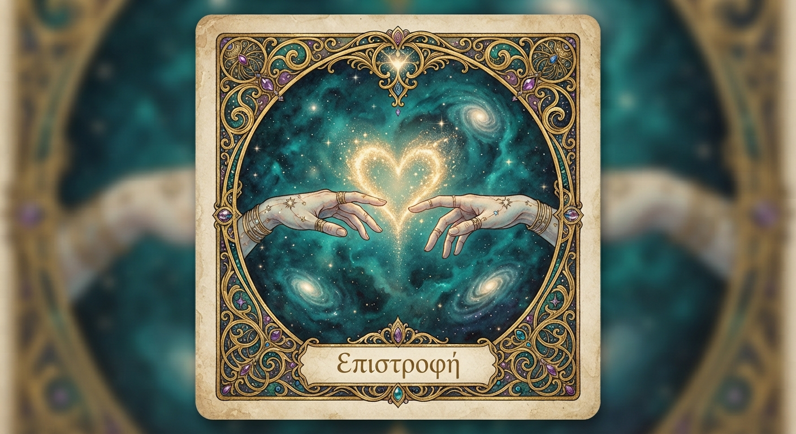
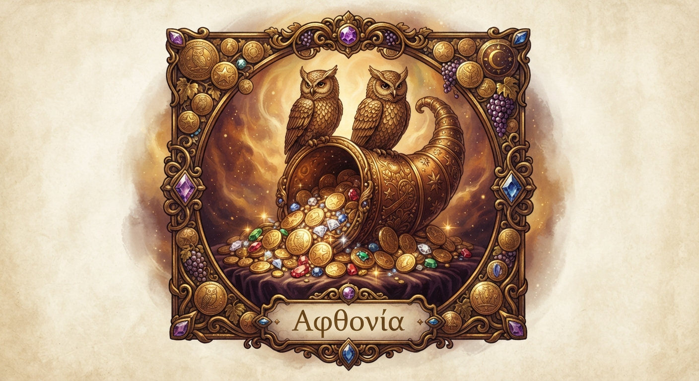
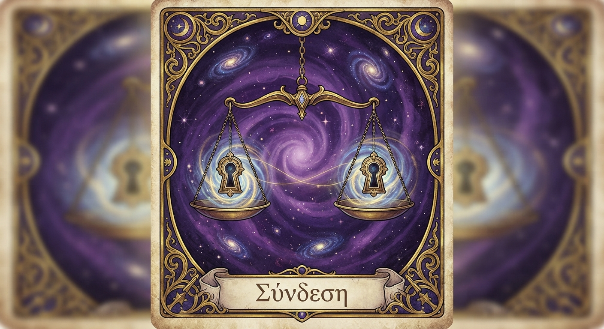
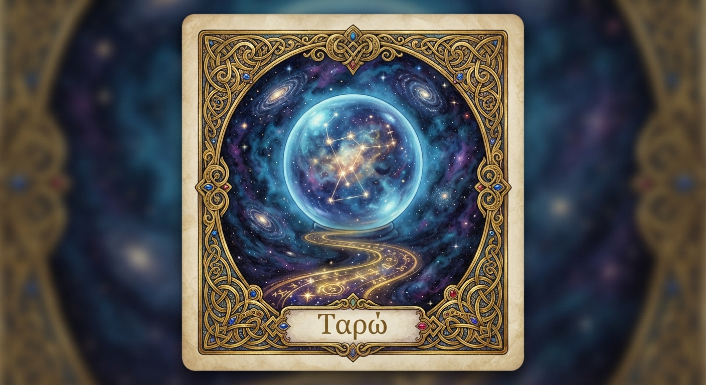
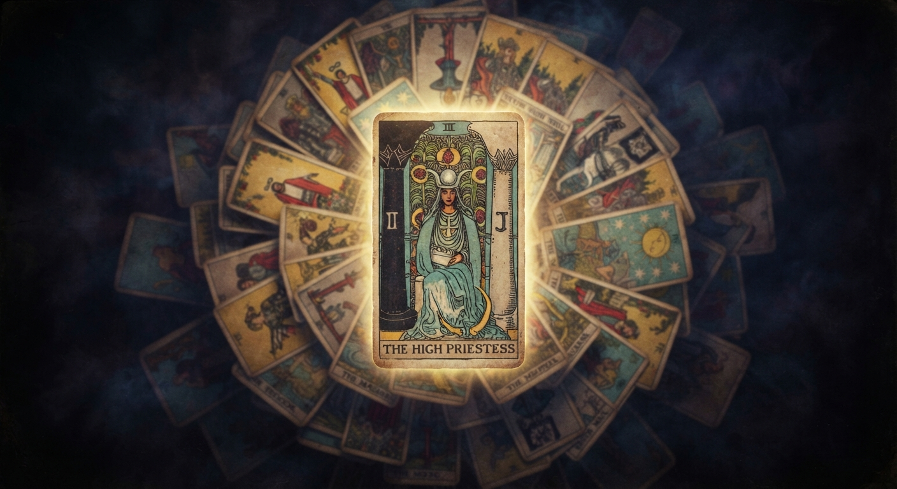
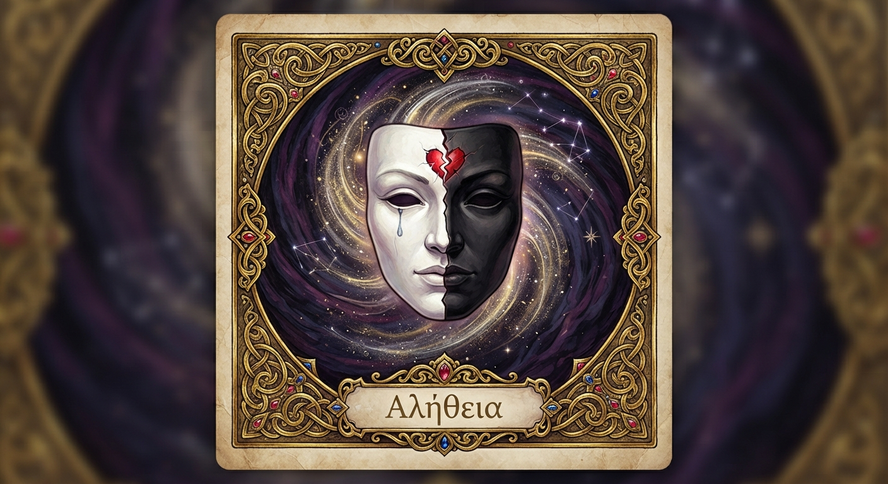
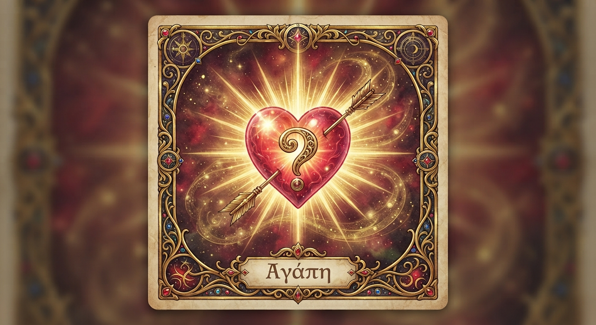

Ο Χρησμός της Επιστροφής
Θα γυρίσει; Και αν γυρίσει, θα είναι για τους σωστούς λόγους; Ο χάρτης σου και ο δικός του δείχνουν την αλήθεια πίσω από τη σιωπή.
4,99€ 2,99€ δεύτερη ερώτηση · 1,99€ τρίτη
Ρώτησε το Μαντείο
Ο αστρολογικός σου χάρτης δεν λέει ψέματα, ακόμα κι όταν εσύ προσπαθείς να μην τον ακούσεις.
Δες τους χρησμούςΚάθε χρησμός χτίζεται πάνω στον δικό σου αστρολογικό χάρτη, όχι σε γενικές προβλέψεις για όλους. Η αλήθεια που θα διαβάσεις είναι δική σου, και μόνο δική σου.

Θα γυρίσει; Και αν γυρίσει, θα είναι για τους σωστούς λόγους; Ο χάρτης σου και ο δικός του δείχνουν την αλήθεια πίσω από τη σιωπή.

Ο Δίας σου δείχνει πού βρίσκεται η δική σου οικονομική δύναμη, ακόμα κι αν δεν έμαθες ποτέ να την εμπιστεύεσαι.

Ταιριάζετε πραγματικά, ή απλά συνηθίσατε ο ένας τον άλλον; Η σύγκριση των δύο χαρτών φανερώνει τα πάντα.

Παρελθόν, παρόν και μέλλον, τρία χαρτιά που δείχνουν τι θα γίνει.

Οι αριθμοί της γέννησής σου κρύβουν ένα μοτίβο που επαναλαμβάνεται σε όλη σου τη ζωή, χωρίς να το έχεις προσέξει ποτέ.

Υπάρχει κάτι που δεν σου λέει. Ο χάρτης του δεν κρύβεται, ακόμα κι όταν εκείνος προσπαθεί.

Σε σκέφτεται ακόμα με τον ίδιο τρόπο; Η θέση της Αφροδίτης του δεν αλλάζει ανάλογα με το τι θα ήθελες να ακούσεις.
«Ρώτησα το Μαντείο ένα απλό πράγμα. Θα γυρίσει; Πήρα την απάντηση που χρειαζόμουν, ευτυχώς.»ΑΝΝΑ, 50 ΕΤΩΝ
«Δεν πίστευα σε αυτά τα πράγματα. Τα χαρτιά μου έδειξαν ακριβώς αυτό που φοβόμουν να παραδεχτώ, και επιτέλους ένιωσα ανακούφιση.»ΜΑΡΙΑ, 58 ΕΤΩΝ
«Ρώτησα αν αξίζει να ξεκινήσω κάτι δικό μου. Η απάντηση μου έδωσε το θάρρος που έψαχνα εδώ και καιρό.»ΕΛΕΝΗ, 54 ΕΤΩΝ